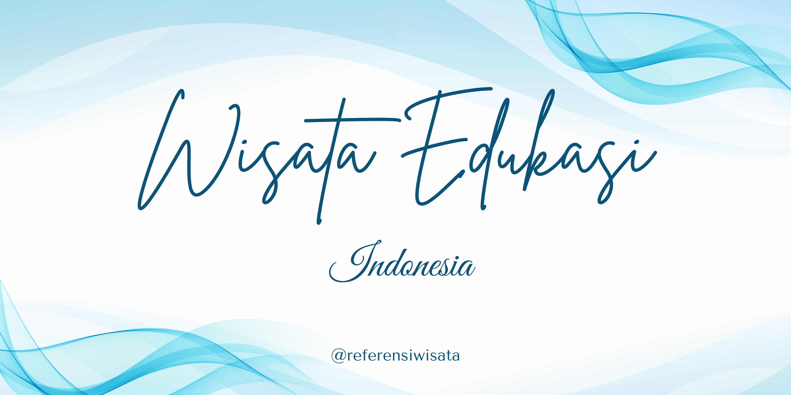

HOME
Wisata edukasi di Indonesia adalah bentuk pariwisata yang menggabungkan kegiatan rekreasi dengan pembelajaran. Jenis wisata ini memberikan pengalaman langsung kepada pengunjung untuk belajar tentang budaya, ilmu pengetahuan, sejarah, dan lingkungan secara menyenangkan. Di Indonesia, banyak tempat seperti museum, desa wisata, dan taman edukasi yang menawarkan pembelajaran interaktif. Wisata edukasi sangat penting untuk menumbuhkan rasa ingin tahu, memperluas wawasan, dan mengenalkan kekayaan Indonesia kepada generasi muda.
Berikut 5 Wisata Edukasi yang ada di Indonesia :
Begitu memasuki destinasi wisata edukasi di Indonesia satu ini, kamu akan dibawa ke dunia masa lalu yang memukau. Museum yang berada di area situs warisan budaya UNESCO ini merupakan lokasi ditemukannya salah satu fosil manusia purba. Bersama anak-anak dan keluarga, kamu bisa belajar tentang evolusi manusia dan bumi di objek wisata edukasi di Indonesia ini.
Kalau sedang berlibur ke Malang, sayang rasanya jika tak singgah ke Museum Angkut. Tempat liburan sekaligus wisata edukasi di Indonesia satu ini memang sedang sangat populer beberapa tahun belakangan. Memadukan konsep hiburan dengan edukasi, kamu bisa belajar tentang alat transportasi dari masa ke masa dari seluruh dunia. Saking uniknya, museum ini didapuk sebagai satu-satunya tempat wisata yang menggunakan angkutan sebagai konsep di Asia Tenggara.
Meskipun terkenal akan kotanya yang sudah sangat maju, Jakarta juga menyimpan banyak destinasi bersejarah yang cocok untuk dijadikan wisata edukasi yang sayang jika dilewatkan. Salah satu tempat liburan yang paling populer dan masih digemari banyak wisatawan hingga kini adalah Wisata Kota Tua, Jakarta. Berada di kawasan Jakarta Barat, objek wisata edukasi di Indonesia satu ini akan memberikan pengalaman sejarah yang mendalam tentang Batavia di masa lampau. Ada banyak sekali spot menarik yang bisa kamu jelajahi di kawasan wisata edukasi di Indonesia ini mulai dari Museum Fatahillah, Museum Bank Indonesia, Stasiun Jakarta Kota yang sudah buka sejak tahun 1929, Pelabuhan Sunda Kelapa, Museum Wayang hingga Museum Bahari.
Selain Museum Angkut, Malang punya satu tempat liburan bertema edukasi yang tidak kalah unik dan menarik yakni Museum Bagong. Dikenal dengan nama lain The Bagong Adventure, destinasi wisata edukasi di Indonesia ini tidak hanya cocok dikunjungi oleh anak-anak tapi juga remaja hingga dewasa. Di museum yang terdiri dari 6 lantai ini pengunjung bisa belajar tentang tubuh manusia dengan cara yang seru. Terdapat 16 zona di dalam museum mulai dari zona otak, jantung, paru-paru hingga zona “become a doctor”. Kamu juga bisa sekalian memeriksakan diri di zona "The Value Adventure".
Untuk kamu yang ingin berwisata edukasi untuk mempelajari tentang planet dan ruang angkasa, langsung saja singgah ke Planetarium dan Observatorium Jakarta. Indonesia sendiri memiliki 3 wahana simulasi dengan konsep serupa. Selain yang berada di Kutai, Kalimantan Timur dan di Surabaya Jawa Timur, Planetarium Jakarta adalah yang tertua. Berdiri pada tahun 1969, Planetarium ini menyediakan ruang pameran benda-benda ruang angkasa hingga pertunjukan Teater Bintang yang canggih. Tempat ini bisa kamu temukan di kawasan Taman Ismail Marzuki.
@Developer WebSekar